El Capítulo 1 recoge el núcleo de la normativa vial neerlandesa (RVV 1990): las normas que determinan qué debe y qué no debe hacer cada usuario de la vía en todo momento. Estas reglas se aplican a todos: ciclistas, conductores de ciclomotores, conductores de turismos, camioneros, peatones en procesión o jinetes. Nadie en la vía está exento.
Las normas están organizadas por temas. Cada sección aborda un aspecto concreto del comportamiento vial y, en conjunto, ofrecen una visión completa de cómo deben funcionar las vías públicas en los Países Bajos.
§ 1 — Posición en la calzada
Por dónde debe circular cada tipo de usuario y qué parte de la vía le corresponde.
Todo conductor está obligado a mantenerse lo más a la derecha posible. Esta es la regla fundamental de posición en la vía: se aplica en todas las carreteras y en cualquier situación, salvo que otra norma disponga expresamente lo contrario.

Los peatones deben seguir un orden estricto de preferencia al caminar. Primera opción: la acera (trottoir) o el sendero peatonal (voetpad). Si no existe ninguno de los dos: el carril bici o la vía compartida para bicicletas y ciclomotores (fiets-/bromfietspad). Si tampoco existen estos: el arcén (berm) o el borde mismo de la calzada.
Las personas que se desplazan con objetos que no se consideran vehículos — patines, monopatín o andador — utilizan el carril bici, el sendero peatonal o la acera. Si no existe ninguno de ellos, utilizan la calzada.

Los ciclistas deben utilizar el carril bici obligatorio o la vía compartida para bicicletas y ciclomotores cuando estén presentes. Si no existe una vía ciclista obligatoria, utilizan la calzada. También pueden utilizar un carril bici facultativo (no obligatorio).
Un ciclomotor ligero (snorfiets) con motor de combustión solo puede utilizar un carril bici facultativo si lleva el motor apagado.
Las bicicletas o bicicletas con remolque cuya anchura supere los 0,75 metros (incluida la carga) pueden utilizar la calzada en todo caso.

Los conductores de ciclomotor (bromfiets) deben utilizar la vía compartida para bicicletas y ciclomotores (fiets-/bromfietspad). Si no existe, utilizan la calzada. Los ciclomotores o ciclomotores con remolque de más de 0,75 metros de anchura (incluida la carga) utilizan siempre la calzada.

Los conductores de vehículos para personas con discapacidad (gehandicaptenvoertuig) pueden utilizar cualquiera de las siguientes partes de la vía: la acera, el sendero peatonal, el carril bici, la vía compartida para bicicletas y ciclomotores, o la calzada. Gozan de total flexibilidad para elegir la superficie más adecuada.

Los jinetes deben utilizar la senda ecuestre (ruiterpad). Si no existe senda ecuestre, utilizan el arcén (berm) o la calzada.

Todos los conductores no incluidos en las normas específicas anteriores — conductores de turismos, camiones, autobuses — utilizan la calzada. Para estacionar, también pueden utilizar otras partes de la vía, excepto la acera, el sendero peatonal, el carril bici, la vía compartida para bicicletas y ciclomotores o la senda ecuestre.
Los carriles bici en calzada (fietsstroken) delimitados por una línea continua no pueden ser utilizados por ningún conductor distinto de los ciclistas y los conductores de vehículos para personas con movilidad reducida.
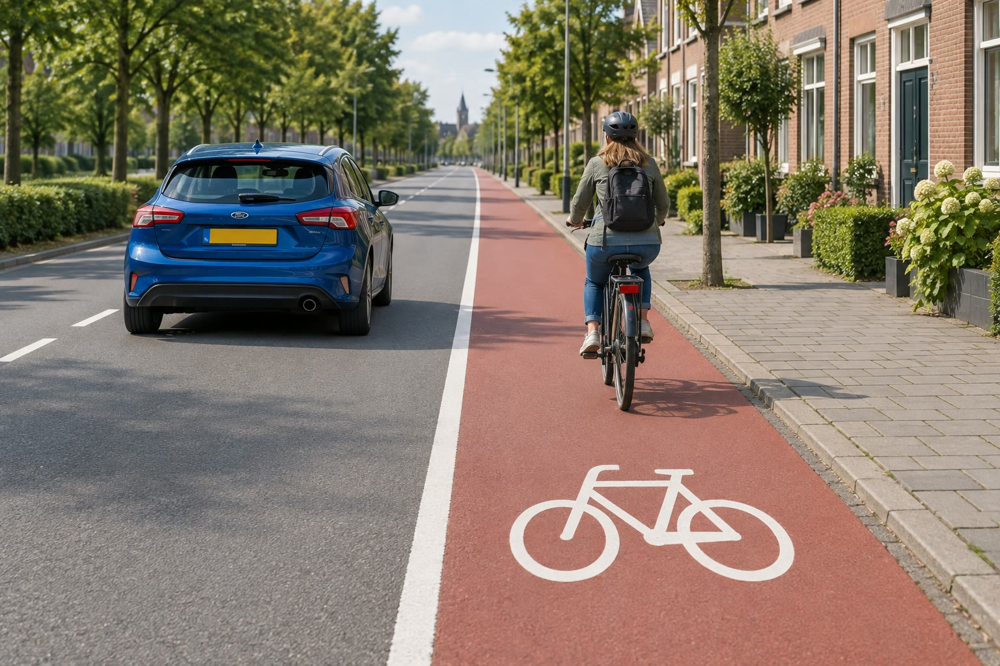
Los peatones que forman una columna, procesión o cortejo fúnebre pueden utilizar la calzada. Cuando lo hacen, se les aplican las normas de circulación previstas para los vehículos, incluidos los semáforos y las marcas viales.
§ 2 — Adelantamientos
El lado general de adelantamiento y sus excepciones.
La norma estándar establece que se adelanta por la izquierda. Te desplazas hacia la izquierda, rebasas al vehículo más lento y vuelves a la derecha.
Existen excepciones concretas:
- A un conductor que se ha situado a la izquierda y ha señalizado su intención de girar a la izquierda se le adelanta por la derecha.
- Los ciclistas deben adelantar a otros ciclistas por la izquierda, pero pueden adelantar a otros tipos de conductores por la derecha.
- Un conductor situado a la derecha de una marca vial de bloques (blokmarkering) puede adelantar por la derecha a los conductores que circulan a la izquierda de dicha marca.
- A los tranvías se les puede adelantar por la derecha.

Está prohibido adelantar a un vehículo inmediatamente antes de un paso de peatones o sobre él. En cuanto te aproximas a un paso de cebra, debes abstenerte de adelantar, con independencia de lo despacio que circule el vehículo precedente.
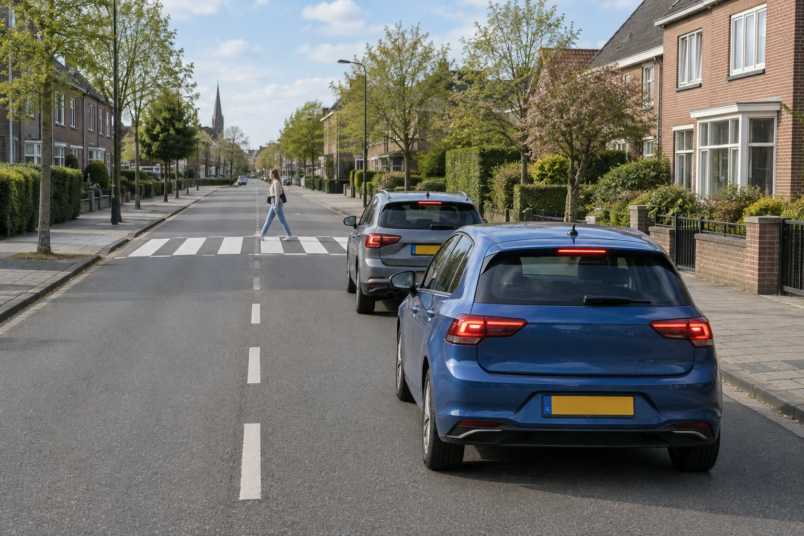
§ 3 — Retenciones de tráfico
Normas especiales aplicables cuando la circulación se detiene o avanza en caravana.
Cuando el tráfico está detenido o avanza muy lentamente y la calzada está dividida en varios carriles del mismo sentido, no estás obligado a utilizar el carril situado más a la derecha. Permanece en el carril en el que te encuentres.
Cuando se circula en filas o caravanas (files), los conductores pueden rebasar a otra fila por la derecha. Se trata de una excepción a la regla general de adelantar por la izquierda.

Cuando un carril termina y el tráfico debe incorporarse al contiguo, la cultura vial neerlandesa espera que los conductores aprovechen toda la longitud del carril que finaliza antes de incorporarse de forma alterna, un vehículo tras otro. Aunque no está impuesto como obligación general en el RVV 1990, se aplica de forma sistemática en la práctica y suele reforzarse mediante señales y marcas viales.
§ 4 — Entrada en intersecciones
La regla más importante al aproximarse a un cruce.
Los conductores no pueden bloquear una intersección. Esto significa que no debes entrar en un cruce a menos que puedas despejarlo por completo. Si el tráfico más adelante está lento o detenido y no puedes atravesarlo, espera antes de la intersección hasta que haya espacio libre al otro lado.
Bloquear intersecciones impide el paso del tráfico transversal y es una de las causas más frecuentes de colapso circulatorio en las ciudades.
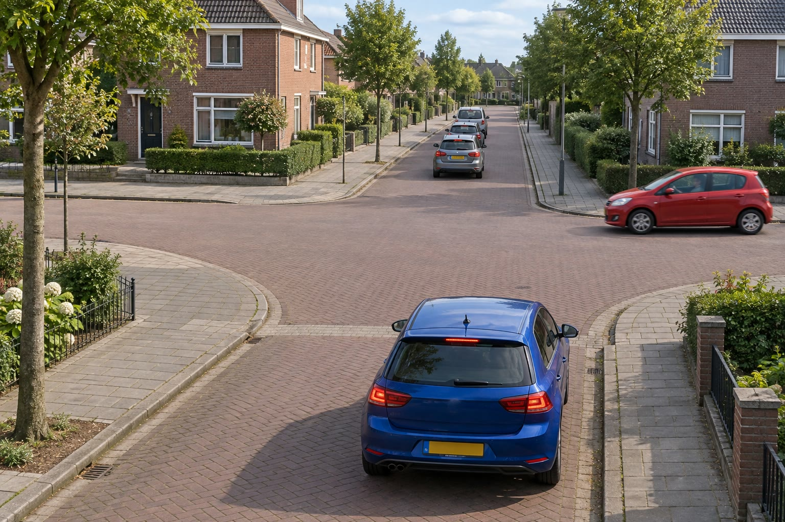
§ 5 — Prioridad de paso
Quién pasa primero: las reglas fundamentales de prioridad en intersecciones y pasos a nivel.
En las intersecciones, todos los conductores deben ceder el paso a los conductores que se aproximen por la derecha. Esta es la regla por defecto cuando no hay señales, semáforos ni otras normas que indiquen lo contrario.
Se aplican dos excepciones:
- Los conductores que circulan por una vía sin pavimentar (onverharde weg) deben ceder el paso a los conductores que circulan por una vía pavimentada, con independencia del lado por el que se aproximen.
- En una intersección no regulada de otro modo, los conductores deben ceder el paso a los tranvías. Los semáforos, las indicaciones de agentes o reguladores de tráfico autorizados y las señales de prioridad aplicables pueden establecer un orden distinto.

Al aproximarte a una intersección, pregúntate en este orden: (1) ¿Hay un agente o regulador de tráfico? Sigue sus indicaciones. (2) ¿Hay semáforos funcionando? Obedécelos. (3) ¿Hay señales viales o marcas de prioridad (calzada con prioridad, ceda el paso, dientes de tiburón haaientanden, stop)? Respétalas. (4) ¿No hay nada de lo anterior? Aplica las normas ordinarias de prioridad: cede el paso a los conductores que vienen por la derecha, teniendo en cuenta las excepciones legales como los tranvías y las vías pavimentadas frente a las no pavimentadas.
Un usuario de la vía solo puede adentrarse en un paso a nivel (overweg) si puede atravesarlo de inmediato y despejarlo por completo. Nunca debes entrar en un paso a nivel si no tienes la certeza absoluta de poder cruzarlo entero sin detenerte.
En un paso a nivel, todos los usuarios deben dejar pasar a cualquier vehículo ferroviario — tren, tranvía o metro — y mantener el cruce totalmente despejado mientras tanto.
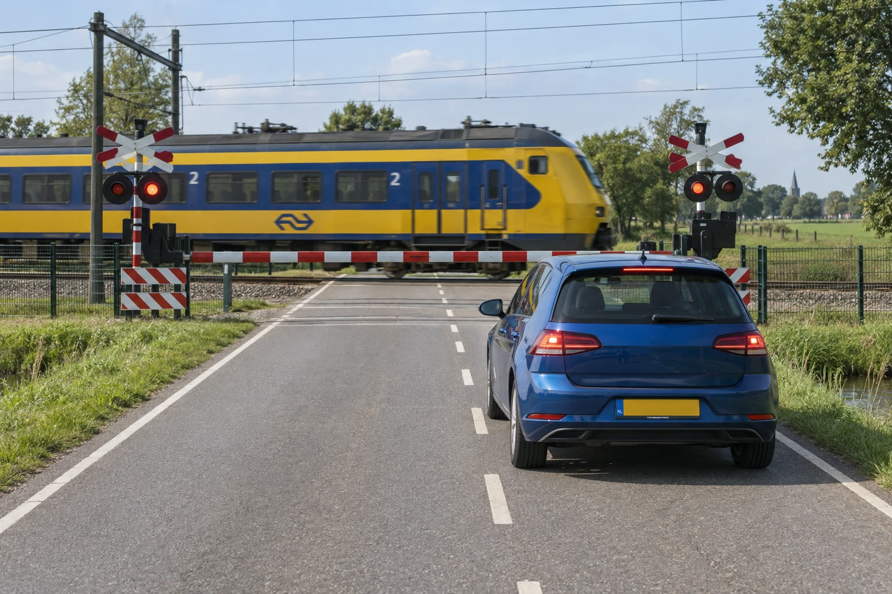
§ 6 — Convoyes militares y cortejos fúnebres
Los usuarios de la vía tienen prohibido cortar o interrumpir una columna militar o un cortejo fúnebre de vehículos de motor. Si una comitiva de este tipo ya está cruzando tu trayectoria, debes esperar hasta que haya pasado por completo, incluso aunque en condiciones normales tuvieras prioridad de paso.
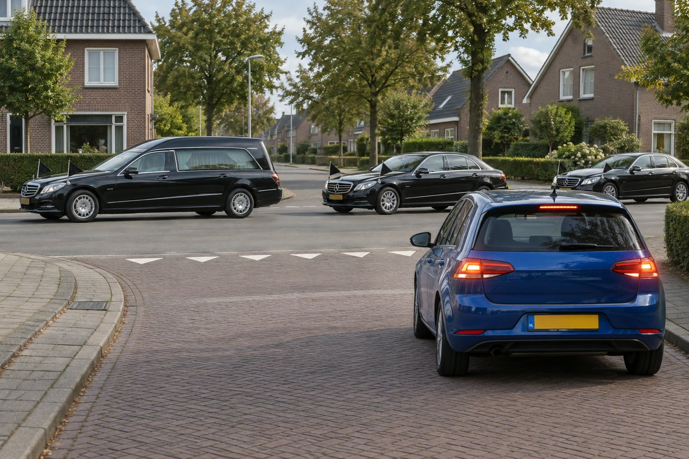
§ 7 — Giros y cambios de dirección
Cómo señalizar, colocarse y ceder el paso al realizar un giro.
Antes de girar, el conductor puede situarse con antelación en la posición adecuada:
- Para girar a la derecha: Sitúate lo más a la derecha posible con suficiente antelación antes del giro.
- Para girar a la izquierda: Acércate todo lo posible al eje central de la calzada o, si se trata de una vía de sentido único, sitúate lo más a la izquierda posible.
Antes de iniciar el giro, el conductor debe señalizar su maniobra con el intermitente o, si el vehículo carece de intermitentes, con el brazo.

El conductor que gira debe ceder el paso a («rechtdoor op dezelfde weg gaat voor»):
- El tráfico que se aproxima en sentido contrario por la misma vía.
- El tráfico que circula en paralelo junto a él por la misma vía — a su izquierda o a su derecha, o inmediatamente detrás (incluidos los peatones).
Además, un conductor que gira a la izquierda debe ceder el paso al conductor que viene de frente y gira a la derecha en la misma intersección («giro corto antes que giro largo»).

§ 8 — Límites de velocidad
El principio general, los límites estándar y los límites específicos según el tipo de vehículo.
Por encima de cualquier límite numérico específico rige un principio fundamental: todo conductor debe poder detener su vehículo dentro de la distancia sobre la que tiene visibilidad y que se encuentra libre de obstáculos. Esto significa que, aunque circules por debajo del límite máximo permitido, vas demasiado rápido si no puedes detenerte a tiempo dentro del tramo visible y despejado.

Dentro de poblado (Bebouwde kom)
en la vía
en la calzada
en vía bici/ciclomotor
en carril bici
en acera / sendero peatonal
Fuera de poblado (Buiten de bebouwde kom)
| Tipo de vehículo | Autopista (Autosnelweg) | Autovía (Autoweg) | Otras vías |
|---|---|---|---|
| Vehículos de motor (turismos, furgonetas) | Sigue el límite señalizado: generalmente 100 km/h de 06:00 a 19:00 en casi todas las autopistas; muchos tramos permiten 100, 120 o 130 km/h de 19:00 a 06:00 | 100 km/h salvo señalización en contrario | 80 km/h salvo señalización en contrario |
| Ciclomotores / veh. de movilidad reducida con motor — calzada | — | — | 45 km/h |
| Ciclomotores / veh. de movilidad reducida — vía bici/ciclomotor | — | — | 40 km/h |
| Vehículos de movilidad reducida — carril bici | — | — | 40 km/h |
| Veh. de movilidad reducida con motor y snorfiets — acera | — | — | 6 km/h |
Límites de velocidad especiales para vehículos concretos
| Vehículo | Velocidad máxima | Observaciones |
|---|---|---|
| Camiones, autobuses convencionales (no T100), autocaravanas >3.500 kg | 80 km/h | Con independencia del tipo de vía fuera de poblado |
| Autobús T100 (T100-bus) | 100 km/h | En autopistas y autovías |
| Cuadriciclo ligero (Brommobiel) | 45 km/h | Siempre |
| Ciclomotor ligero (Snorfiets) | 25 km/h | Siempre |
| Turismo / furgoneta / motocicleta / vehículo de 3 ruedas / autobús T100 con remolque ≤3.500 kg | 90 km/h | Con remolque (en autopistas y autovías) |
| Otros vehículos de motor con remolque (o remolque >3.500 kg) | 80 km/h | Con remolque |
| Tractores agrícolas, vehículos de motor de velocidad limitada, maquinaria móvil | 25 km/h | General; hasta 40 km/h en vías habilitadas fuera de poblado o determinadas vías urbanas |
Los límites anteriores deben interpretarse siempre junto con las señales verticales y los paneles electrónicos de pórtico (señales matriciales). En las autopistas neerlandesas, la velocidad máxima permitida depende del tramo y de la franja horaria. De 06:00 a 19:00, casi todas las autopistas están limitadas a 100 km/h, con algunos tramos a 80 o 130 km/h. De 19:00 a 06:00, muchos tramos permiten 100, 120 o 130 km/h. Respeta siempre el límite indicado para la vía y la hora a la que circules.
§ 9 — Detención (Stilstaan)
Lugares en los que está prohibido detenerse, ni siquiera brevemente.
Un conductor no puede detener voluntariamente su vehículo (stilstaan) en ninguno de los siguientes lugares:
- En una intersección o en un paso a nivel
- Sobre un carril bici en calzada (fietsstrook) o en la calzada junto a dicho carril bici
- Sobre un paso de peatones o a menos de 5 metros de él
- Dentro de un túnel
- Junto a una señal de parada de autobús: a la altura de la marca en damero (bloques blancos y negros) o, si no hay marca vial, a menos de 12 metros de la señal
- En la calzada junto a un carril bus
- Junto a una línea amarilla continua pintada en el bordillo o borde de la calzada
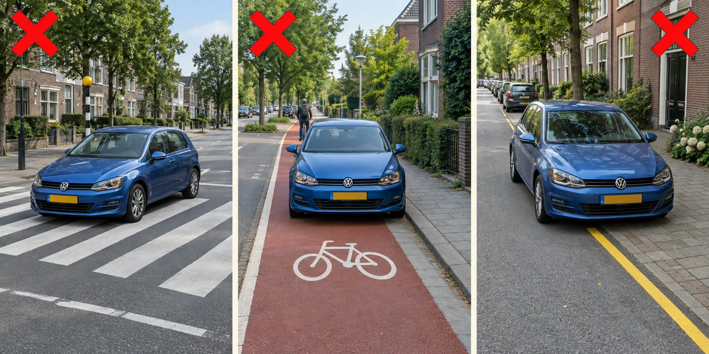


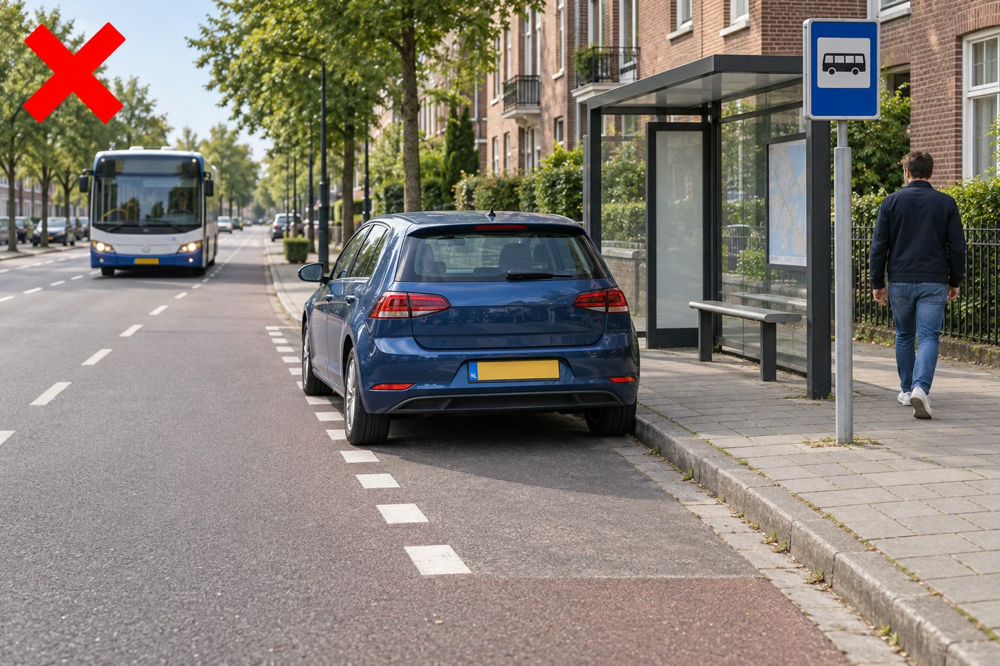
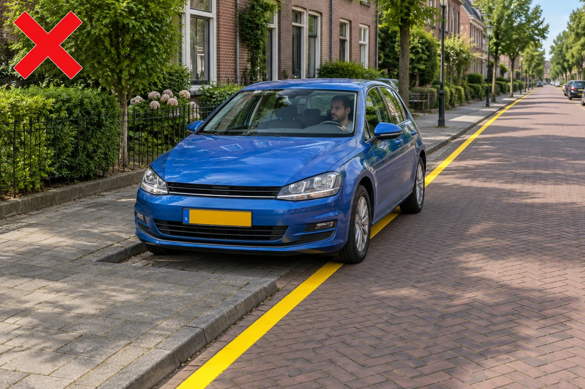
§ 10 — Estacionamiento
Dónde no puedes dejar estacionado tu vehículo y las normas de las plazas señalizadas.
El estacionamiento (parkeren) está prohibido en los siguientes lugares:
- A menos de 5 metros de una intersección
- Delante de una entrada o salida de vehículos (vado / inrit o uitrit)
- En la calzada de una vía con prioridad fuera de poblado
- En una plaza de aparcamiento reservada si tu vehículo no pertenece a la categoría indicada en la señal
- En una plaza de aparcamiento de un modo o con una finalidad distintos de los indicados en la señal
- En lugares u horarios en los que una señal prohíba estacionar
- Junto a una línea amarilla discontinua (prohibido estacionar)
- Sobre un paso de peatones o a menos de 5 metros de él (igual que para detenerse)
- Sobre un carril bici o un sendero peatonal / acera
- En paralelo junto a otro vehículo estacionado (en doble fila)

Donde una señal indique una zona de estacionamiento limitado — zona azul (parkeerschijfzone / blauwe zone) — el conductor debe colocar un disco de estacionamiento (parkeerschijf) que muestre la hora de llegada. El disco debe verse claramente desde el exterior a través del parabrisas. Está prohibido permanecer estacionado más allá del tiempo máximo indicado en la señal.

Donde rija el estacionamiento de pago (betaald parkeren), el conductor debe cumplir con el método de pago y las condiciones establecidas para ese lugar. El pago puede realizarse en un parquímetro, mediante una aplicación móvil de aparcamiento u otro sistema autorizado (a menudo vinculado a la matrícula). Solo es necesario exhibir un tique en papel cuando el sistema local así lo exija. Estacionar sin pago válido o superar el periodo abonado está prohibido.

En todos los lugares donde está prohibido detenerse (§ 9) también está prohibido estacionar. Sin embargo, el estacionamiento añade muchas prohibiciones adicionales (como junto a una línea amarilla discontinua o a menos de 5 m de una intersección), donde sí se permite detenerse brevemente para que suban o bajen pasajeros o para cargar y descargar mercancías de inmediato. Comprueba siempre la señalización.
§ 11 — Estacionamiento de bicicletas y ciclomotores
Las bicicletas y los ciclomotores deben colocarse de modo que no obstaculicen a los demás usuarios de la vía. No pueden dejarse en la calzada, el carril bici, la acera ni el sendero peatonal de forma que impidan el paso libre de peatones, ciclistas u otros usuarios. Donde existan zonas habilitadas de aparcamiento para bicicletas, deben utilizarse.
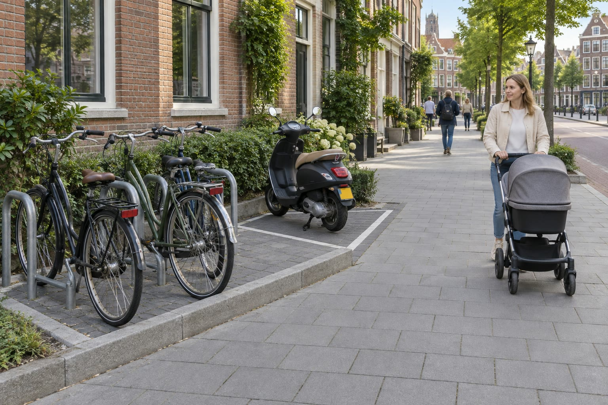
§ 12 — Señales y distintivos de identificación
Cómo indicar tus intenciones y cuáles son las señales y distintivos legales en situaciones especiales.
Los conductores deben advertir con claridad y antelación cuando pretendan cambiar de dirección o realizar un desplazamiento lateral importante. Las señales se realizan con el intermitente (richtingaanwijzer). Si el vehículo no dispone de intermitentes, debe hacerse una señal con el brazo. La señal debe emitirse antes de iniciar la maniobra, no una vez comenzada.

Un vehículo prioritario (voorrangsvoertuig) utiliza simultáneamente una luz azul destellante y una sirena bitonal o de dos tonos. Estas señales solo pueden emplearse cuando el vehículo atiende una tarea urgente. Todos los demás usuarios de la vía deben cederle el paso de inmediato y despejar su trayectoria.
La luz azul o una señal acústica también pueden emplearse puntualmente sin que el vehículo actúe como vehículo prioritario en sentido estricto — por ejemplo, cuando la policía ordena detenerse a un conductor —. Aun cuando no se apliquen todas las prerrogativas de vehículo prioritario, los usuarios deben reaccionar de forma segura y adecuada.

Las columnas militares llevan los distintivos oficiales de identificación establecidos conjuntamente por el Ministerio de Infraestructuras y el Ministerio de Defensa (banderines/luces azules en cabeza y verdes en el vehículo de cierre). Estos distintivos diferencian al convoy militar del tráfico ordinario e indican a los demás usuarios que no está permitido cortar la columna.

Un cortejo fúnebre reconocido de vehículos de motor utiliza los distintivos legales prescritos, consistentes en dos banderines negros triangulares colocados de la forma reglamentaria en los vehículos participantes. No confundas estos distintivos con luces rotativas naranjas ni moradas.

Los conductores solo pueden utilizar señales acústicas (claxon) o ráfagas de luz para evitar un peligro inminente. Esta norma rige tanto dentro como fuera de poblado. Por tanto, no está permitido tocar el claxon ni dar ráfagas para saludar, expresar enfado o simplemente avisar de que se va a adelantar.
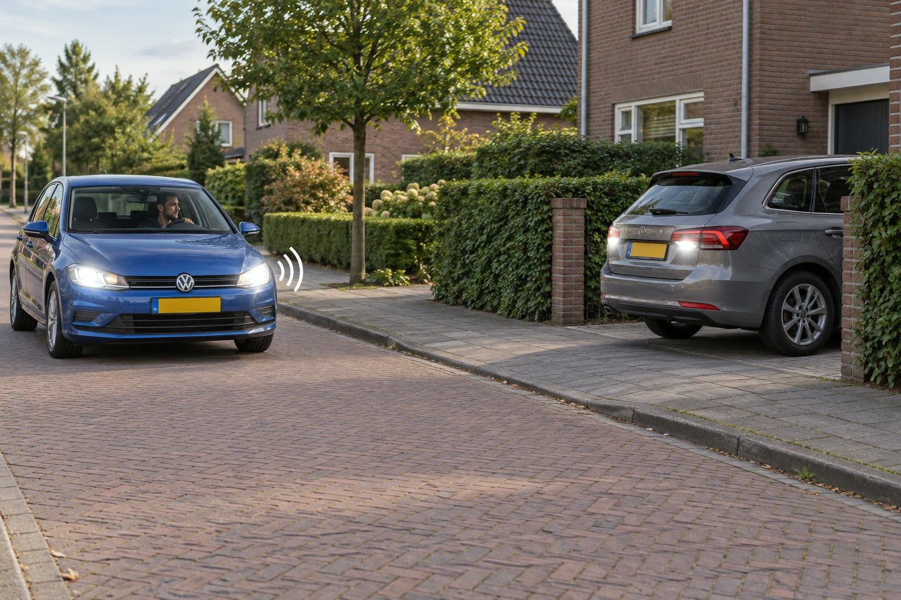
§ 13 — Alumbrado en circulación
Qué luces deben llevarse encendidas y en qué circunstancias mientras el vehículo está en movimiento.
Los vehículos de motor deben llevar encendidas las luces de cruce (dimlicht) durante la noche y de día cuando las condiciones meteorológicas o ambientales reduzcan sensiblemente la visibilidad (niebla, lluvia intensa, nieve o crepúsculo). De día y con buena visibilidad bastan las luces de circulación diurna (dagrijverlichting) si el vehículo dispone de ellas. Los faros nunca deben deslumbrar a los demás usuarios de la vía.

Una bicicleta que circule de noche o con mala visibilidad debe disponer de:
- Una luz delantera blanca o amarilla fija (que no parpadee)
- Una luz trasera roja fija (que no parpadee)
- Un catadióptrico (reflector) trasero rojo que no sea triangular
- Reflectores amarillos o ámbar en los pedales
- Reflectores blancos o amarillos en las ruedas/llantas o en los neumáticos
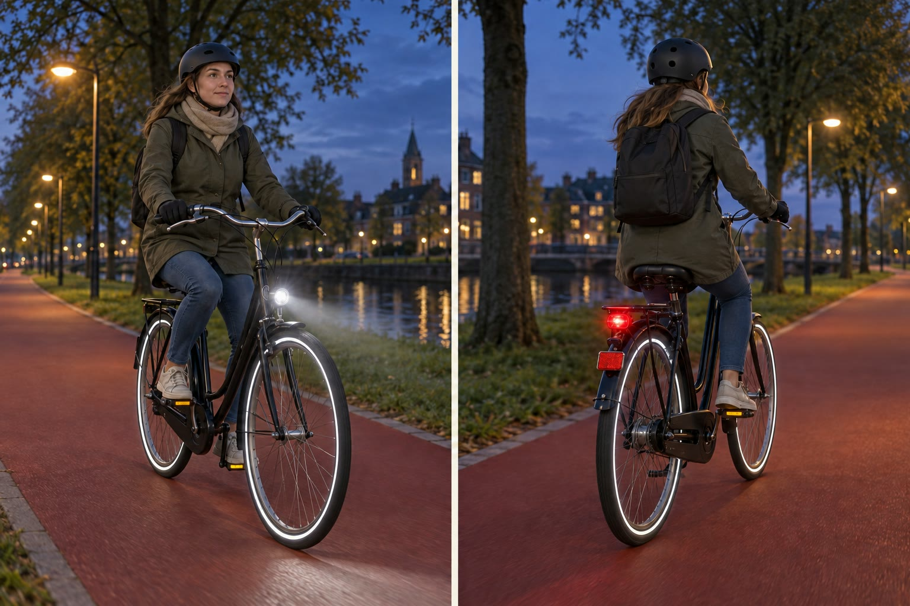
Todos los vehículos deben llevar encendidas luces traseras rojas de noche y en condiciones de visibilidad reducida. Además, deben contar con los catadióptricos (reflectores) reglamentarios: aunque su número y ubicación varían según el tipo de vehículo, el principio es universal: el vehículo debe ser claramente visible por detrás.
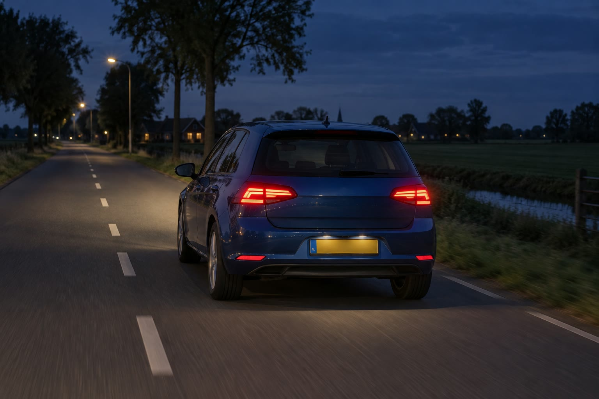
La luz antiniebla delantera puede utilizarse cuando la niebla, la nevada o la lluvia reduzcan gravemente la visibilidad. La luz antiniebla trasera solo puede encenderse cuando la niebla o la nevada reduzcan la visibilidad a menos de 50 metros; está prohibido utilizarla únicamente por lluvia intensa. Apaga las luces antiniebla en cuanto las condiciones dejen de justificar su uso.
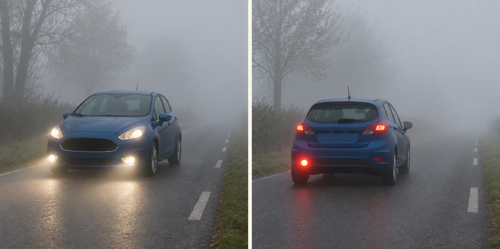
Una luz rotativa o intermitente amarilla/ámbar se utiliza en situaciones legalmente previstas para advertir a los demás usuarios de una circunstancia especial o peligrosa, como determinados trabajos en la vía, auxilio en carretera o transportes especiales. Esta luz no otorga prioridad de paso al vehículo.
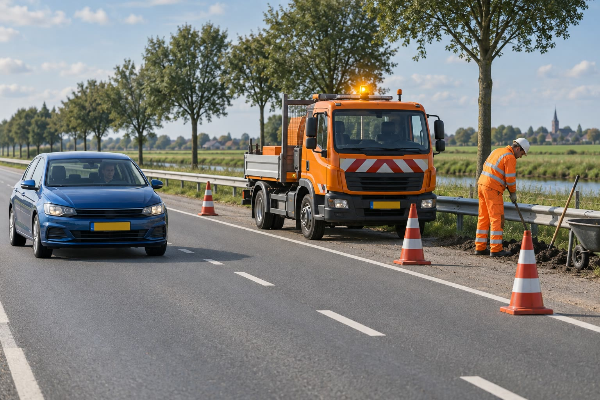
§ 14 — Alumbrado con el vehículo detenido
Obligaciones de iluminación cuando el vehículo está detenido o estacionado.
De noche — y también de día cuando la visibilidad sea gravemente reducida — un vehículo de motor detenido o estacionado fuera de poblado sobre la calzada debe mantener encendidas las luces reglamentarias de posición (stadslicht) y traseras. La misma obligación se aplica en bandas de estacionamiento, apartaderos, arcenes de emergencia y zonas de parada situados junto a autopistas y autovías.
Dentro de poblado no rige esa misma obligación específica de alumbrado en parada sobre la calzada, aunque siempre debes asegurarte de que el vehículo quede estacionado de forma legal, segura y suficientemente visible.
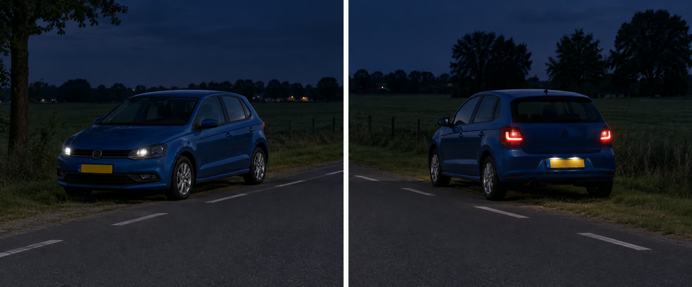
§ 15 — Luces especiales
Una luz azul rotativa o destellante solo puede ser utilizada por los vehículos oficialmente autorizados para ello — principalmente ambulancias, camiones de bomberos y vehículos policiales —. Indica una actuación de urgencia y, combinada con la sirena, convierte al vehículo en un vehículo prioritario (voorrangsvoertuig).
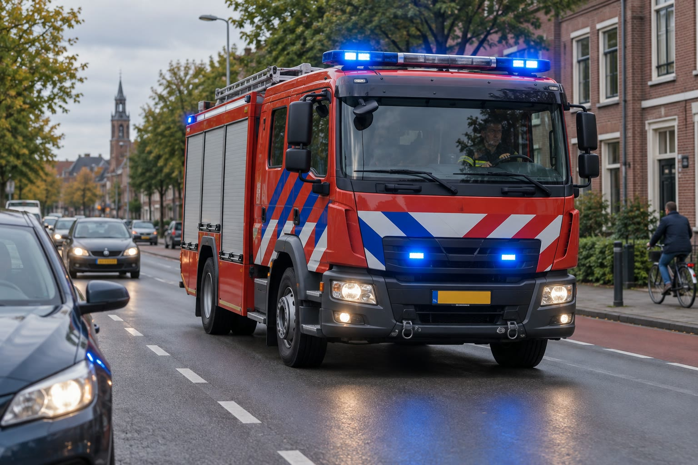
Una luz verde destellante está reservada al vehículo de mando y coordinación (commandovoertuig) en operaciones autorizadas de la policía, los bomberos o los servicios de ambulancia. Sirve para identificar el puesto de mando en el lugar del incidente; por sí sola no convierte al vehículo en prioritario ni le otorga preferencia de paso.

§ 16 — Autopistas y autovías
Normas especiales aplicables exclusivamente en autopistas (autosnelwegen) y autovías (autowegen).
Los siguientes usuarios tienen prohibido el acceso a una autopista (autosnelweg):
- Peatones
- Ciclistas
- Conductores de ciclomotores (tanto bromfiets como snorfiets)
- Conductores de vehículos para personas con movilidad reducida
- Jinetes y conductores de animales
- Vehículos de motor que, por construcción, no puedan o no tengan permitido alcanzar al menos 60 km/h
- Vehículos agrícolas y vehículos de motor de velocidad limitada (ni cuadriciclos ligeros brommobielen)

En una autopista está prohibido:
- Detenerse voluntariamente, cambiar el sentido de la marcha o dar marcha atrás
- Cruzar la mediana (middenberm)
- Circular o detenerse en el arcén de emergencia (vluchtstrook), salvo en caso de emergencia o cuando esté oficialmente abierto como carril de hora punta (spitsstrook)
- Circular sobre un cebreado o zona excluida al tráfico (verdrijvingsvlak)
La entrada y la salida solo pueden realizarse a través de los carriles de aceleración/incorporación (invoegstroken) y los carriles de deceleración/salida (uitrijstroken) destinados a ello.

Una autovía (autoweg, señal G3) está reservada a los vehículos de motor que, por construcción, puedan y tengan permitido circular al menos a 50 km/h. No es igual que una autopista y en ocasiones puede presentar cruces a nivel o distintas configuraciones de acceso (tampoco se permite dar la vuelta ni dar marcha atrás en ella). Respeta siempre las señales y marcas viales específicas de la vía.

En horas de gran intensidad circulatoria, el arcén de determinadas autopistas se habilita como un carril adicional de circulación: el spitsstrook. Los paneles electrónicos situados sobre la calzada indican si está abierto (flecha verde o límite de velocidad). Cuando está abierto, puedes utilizarlo como un carril normal (manteniendo la derecha). Cuando el panel muestra un aspa roja, el carril está cerrado y está prohibido circular por él.
§ 17 — Zonas residenciales (Erven)
Normas especiales para áreas residenciales donde peatones y vehículos comparten el mismo espacio.
Dentro de una zona residencial (erf), los conductores no pueden superar los 15 km/h. Este es el límite máximo legal establecido. Dado que los peatones pueden utilizar toda la anchura de la vía y puede haber niños jugando, los conductores deben extremar la precaución y estar preparados para detenerse con seguridad.

Dentro de un erf, los peatones pueden utilizar toda la anchura de la vía. Esto no crea una norma absoluta según la cual los peatones tengan automáticamente prioridad sobre cualquier conductor en toda circunstancia; siguen vigentes las normas ordinarias de prioridad y de maniobras especiales. No obstante, los conductores deben adaptar su conducción al carácter compartido del erf y evitar generar cualquier peligro u obstáculo.

Dentro de un erf, los vehículos de motor de más de dos ruedas solo pueden estacionar en las plazas de aparcamiento expresamente señalizadas (marcadas con una «P»). No está permitido aparcar en ninguna otra parte del erf, ni en la calzada ni en la zona compartida de paso.

Al salir de una zona residencial (erf) para incorporarse a una vía ordinaria (a menudo a través de una salida rebajada o uitrit), los conductores deben ceder el paso a todos los usuarios de dicha vía, incluidos los peatones y el tráfico que se aproxime tanto por la izquierda como por la derecha.

La zona residencial (erf) comienza en la señal azul con figuras blancas de una vivienda, un coche y personas jugando/caminando (G5), y finaliza en la misma señal cruzada por una franja diagonal roja (G6). En todo el interior de la zona rigen las normas especiales anteriores.
§ 18 — Glorietas (Rotondas)
La prioridad en una glorieta viene determinada por las señales verticales y las marcas viales. En la gran mayoría de las glorietas neerlandesas, las señales de ceda el paso (B6) y los dientes de tiburón (haaientanden) obligan a los conductores que entran a ceder el paso al tráfico que ya circula dentro de la glorieta. Si ninguna señal ni marca vial regula la prioridad, se aplica la regla ordinaria de ceder el paso a los conductores que vienen por la derecha; en ese caso, el tráfico que se incorpora por la derecha tiene prioridad.

Al abandonar una glorieta, debes accionar el intermitente derecho justo antes de tomar tu salida. No es obligatorio poner el intermitente al entrar en la glorieta ni mientras pasas salidas que no vas a tomar. El momento esencial es señalizar a la derecha al salir, para que los conductores que esperan incorporarse sepan que abandonas la glorieta.
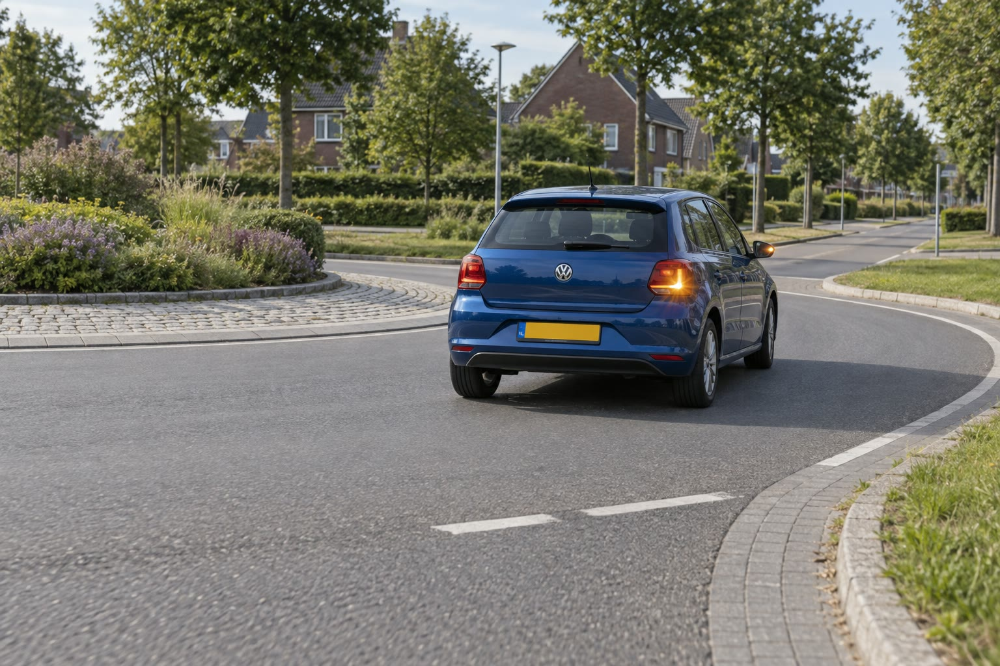
§ 19 — Peatones
Los conductores deben ceder el paso a los peatones y conductores de vehículos de movilidad reducida que crucen o estén claramente a punto de cruzar por un paso de peatones (paso de cebra, voetgangersoversteekplaats / VOP). Un peatón que ya ha pisado el paso o que espera claramente junto al bordillo con intención de cruzar tiene prioridad.
Asimismo, debes ceder el paso a las personas ciegas o con deficiencia visual provistas de bastón blanco con una o más franjas rojas, y a cualquier persona con dificultades visibles de movilidad que cruce la calzada.
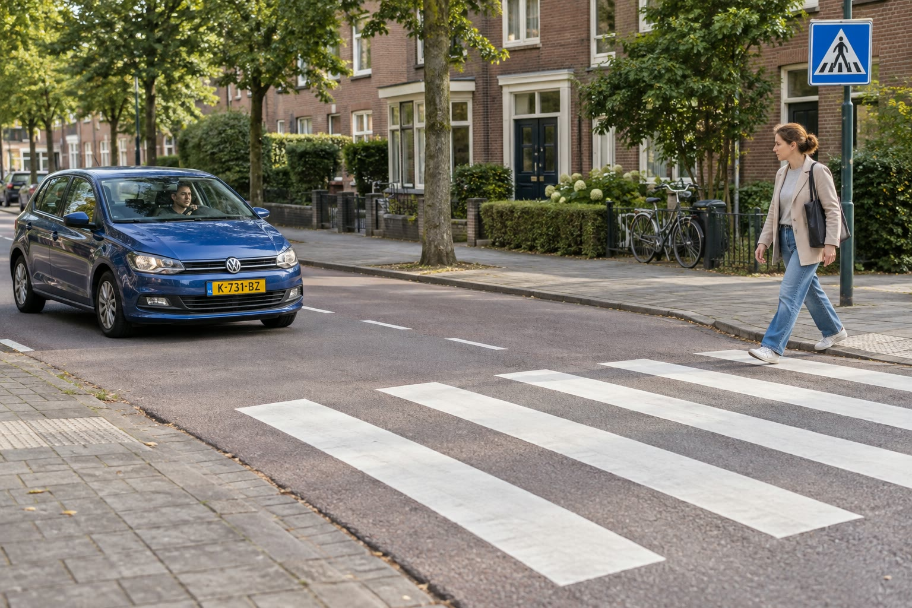
§ 20 — Vehículos prioritarios
Cuando se aproxima un vehículo prioritario (voorrangsvoertuig) — aquel que lleva encendidas simultáneamente la luz azul destellante y la sirena —, todos los demás usuarios de la vía deben cederle el paso de inmediato. Esto implica:
- Apartarse a un lado con la mayor rapidez que permita la seguridad
- Detenerse si resulta necesario
- No bloquear la trayectoria del vehículo prioritario
- Hacerlo incluso si para dejar espacio es necesario detenerse brevemente sobre una línea amarilla o en otro punto donde normalmente estaría prohibido parar

§ 21 — Animales sueltos en la vía
Al encontrarte con animales sueltos o guiados en la vía o en sus inmediaciones — ganado, caballos, perros —, todos los conductores deben reducir la velocidad y extremar las precauciones. Los animales son imprevisibles y pueden reaccionar de forma brusca. Rebásalos despacio dejando la mayor separación lateral posible y no toques el claxon cerca de ellos, ya que podrías asustarlos aún más.
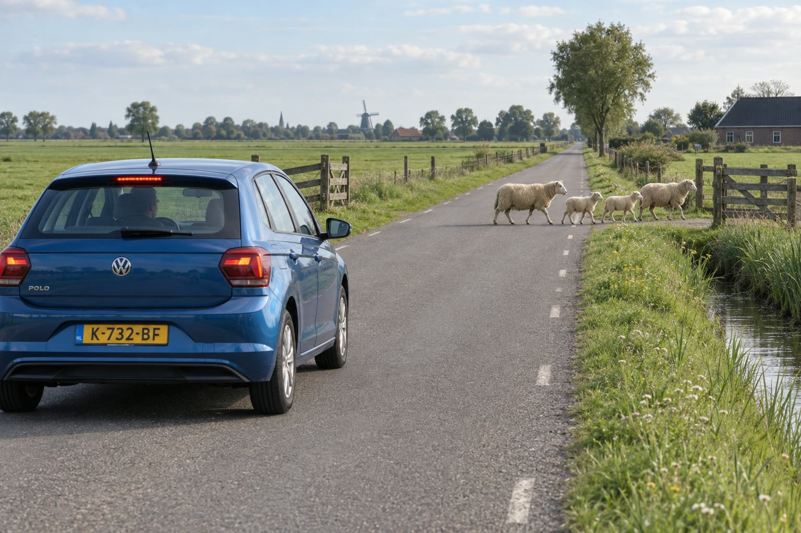
§ 22 — Pasajeros subiendo y bajando
Cuando un tranvía o autobús está detenido en una parada sin isleta peatonal (vluchtheuvel) y sus pasajeros tienen que cruzar la calzada o el carril bici para subir o al bajar, los conductores deben cederles el paso. Estos pasajeros gozan de prioridad aunque no haya un paso de cebra pintado en ese punto.

§ 23 — Remolque de vehículos
Cuando un vehículo de motor remolca a otro vehículo de motor (slepen), la distancia entre la parte trasera del vehículo tractor y la parte delantera del vehículo remolcado no puede superar los 5 metros (además, no se permite remolcar un vehículo de motor de dos ruedas ni ser remolcado por él). El conjunto debe ser seguro y el vehículo remolcado debe contar con frenos y dirección operativos y un conductor con permiso válido.
La disposición del RVV 1990 sobre remolque no fija un límite general de velocidad de 25 km/h al remolcar. No memorices 25 km/h como regla universal neerlandesa para remolcar. En autopistas y autovías también deben respetarse las normas específicas de acceso y seguridad (remolcar solo hasta la salida más próxima si se produce una avería); cualquier situación insegura debe dejarse en manos de un servicio profesional de grúa.

§ 24 — Maniobras especiales
Marcha atrás, cambio de sentido, incorporación y otras maniobras que exigen ceder siempre el paso.
Al realizar cualquier maniobra especial (bijzondere manoeuvre) — dar marcha atrás, cambiar el sentido de la marcha, salir de una plaza de aparcamiento o de un vado (uitrit), reanudar la marcha desde el bordillo (wegrijden) o cambiar de carril —, el conductor debe ceder primero el paso a todos los demás usuarios de la vía (incluidos los peatones). Ninguna maniobra especial puede iniciarse si obliga a otro usuario a modificar su velocidad o su trayectoria.
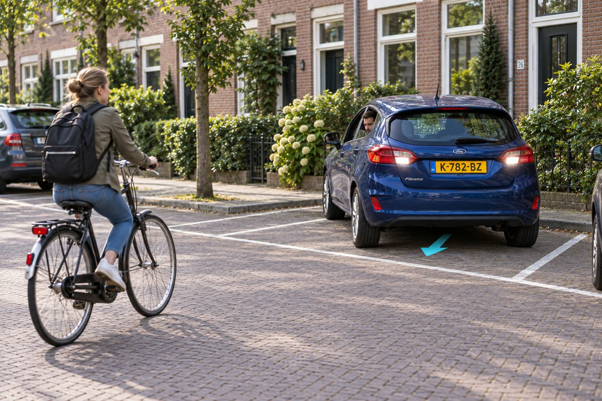
Circular marcha atrás solo está permitido cuando puede hacerse con total seguridad y sin obstaculizar a los demás usuarios de la vía. Debes comprobar el entorno detrás de tu vehículo utilizando los espejos retrovisores y mirando por encima del hombro. Circular marcha atrás a gran velocidad o recorrer distancias innecesariamente largas en vía pública no está permitido.

El cambio de sentido (keren) solo está permitido cuando puede completarse de forma segura, sin obstaculizar a otros usuarios y sin poner a nadie en peligro. Está estrictamente prohibido en autopistas y autovías, así como donde lo prohíba una señal específica (F7).

§ 25 — Ruido innecesario
Está prohibido producir ruido innecesario con un vehículo. Esto incluye acelerar el motor en vacío sin motivo, hacer derrapar los neumáticos deliberadamente, tocar el claxon de forma reiterada sin que exista peligro y circular con sistemas de escape modificados o excesivamente ruidosos. El claxon existe exclusivamente como dispositivo de advertencia ante un peligro inminente, no para comunicarse ni para mostrar frustración.
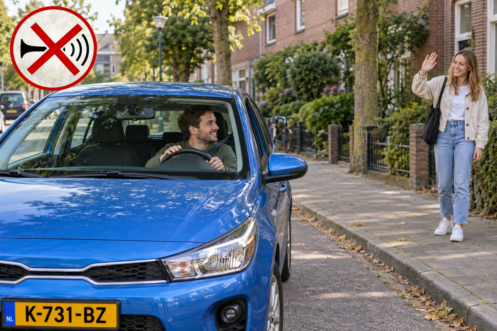
§ 26 — Triángulo de preseñalización de peligro
Llevar un triángulo de preseñalización de peligro (gevarendriehoek) en el coche no es equipamiento obligatorio en los Países Bajos. Ahora bien, si un vehículo de motor de más de dos ruedas detenido (o un remolque) constituye un obstáculo que los conductores que se aproximan podrían no advertir a tiempo, es obligatorio señalizarlo. Esto puede hacerse encendiendo las luces de emergencia (waarschuwingslichten) o colocando un triángulo de peligro. Si las luces de emergencia funcionan y están encendidas, no es obligatorio colocar el triángulo. Cuando se utilice el triángulo (por ejemplo, si fallan las luces de emergencia), debe situarse a unos 30 metros del vehículo en la dirección por la que se aproxima el tráfico, de modo que sea bien visible.

§ 26a — Asientos
Los pasajeros solo pueden ser transportados en asientos expresamente destinados para pasajeros (zitplaatsen). Está prohibido viajar de pie en un vehículo en movimiento, ir sentado en el maletero o situarse en cualquier lugar no diseñado para pasajeros, salvo en vehículos específicamente concebidos y autorizados para ello (como determinados autobuses urbanos con plazas de pie).
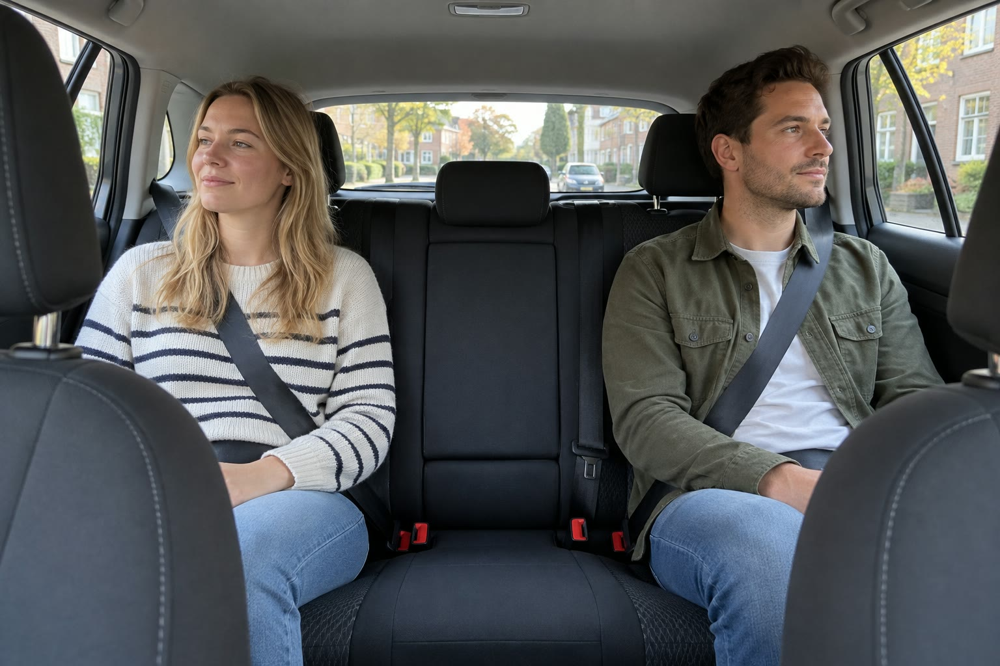
§ 27 — Cinturones de seguridad y sistemas de retención infantil
Todos los ocupantes de un vehículo de motor equipado con cinturones deben llevar abrochado el cinturón de seguridad (autogordel) mientras el vehículo está en circulación. El conductor es legalmente responsable de que los pasajeros menores de 12 años (y los menores que requieran silla infantil) vayan debidamente sujetos; a partir de los 12 años cada pasajero responde también por sí mismo, si bien debes asegurarte de que todos los ocupantes lo lleven puesto correctamente: sobre el hombro/clavícula y el pecho, y ajustado a la pelvis, nunca pasado por debajo del brazo.
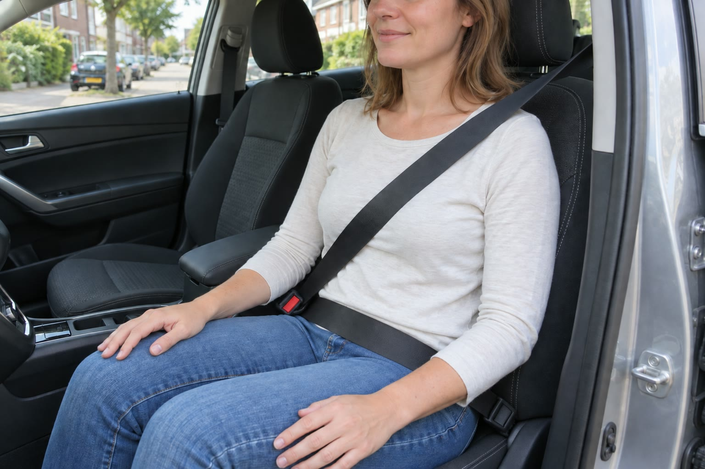
Los niños de menos de 1,35 metros de estatura deben utilizar por regla general un sistema de retención infantil homologado (kinderbeveiligingssysteem) adaptado a su peso y talla y correctamente instalado. Los niños pueden viajar en una silla infantil homologada tanto en el asiento delantero como en los traseros. Una silla infantil orientada hacia atrás (a contramarcha) solo puede instalarse en una plaza equipada con airbag frontal si dicho airbag ha sido previamente desactivado.

Determinadas personas cuentan con una exención oficial del uso del cinturón — por ejemplo, quienes disponen de una dispensa médica formal por razones de salud —. Dicha tarjeta oficial de exención debe llevarse en el vehículo para poder acreditarla.
§ 28 — Cascos
El conductor y cualquier pasajero de una motocicleta (motorfiets) o de un ciclomotor (bromfiets) deben llevar puesto un casco homologado bien ajustado y abrochado mientras circulan.
Los conductores y pasajeros de ciclomotores ligeros (snorfiets) también están obligados a llevar un casco homologado. En un snorfiets puede utilizarse un casco homologado de ciclomotor/motocicleta (ECE) o un casco homologado para speed-pedelec (NTA 8776). Los conductores y pasajeros de speed-pedelec están igualmente sujetos a la obligación de llevar casco homologado.
Existen exenciones específicas para determinados vehículos cuando la ley lo prevé expresamente, por ejemplo ciertos vehículos cerrados o cuadriciclos ligeros (brommobielen) equipados con cinturones de seguridad homologados.
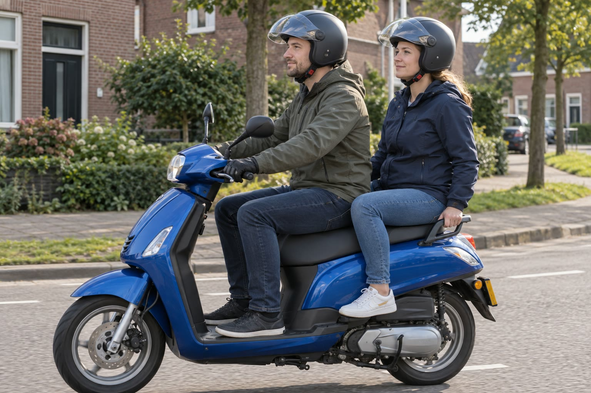
§ 29 — Niños en bicicletas y ciclomotores
Los niños menores de 8 años transportados en una bicicleta, un snorfiets o un bromfiets deben ir sentados en un asiento seguro y adaptado que ofrezca sujeción suficiente para la espalda, las manos y los pies (por ejemplo, una silla infantil adecuada para bicicleta). Los niños transportados en un bromfiets o un snorfiets deben además llevar casco homologado.
La normativa exige un asiento seguro y con apoyo adecuado; no existe en los Países Bajos una prohibición general de llevar a más de un niño en una bicicleta, siempre que cada menor de 8 años disponga del asiento reglamentario y el transporte sea seguro y acorde al diseño del vehículo.

§ 30 — Uso del teléfono móvil al conducir
Está prohibido sujetar con la mano un teléfono móvil — o cualquier otro dispositivo electrónico móvil de comunicación, música o información — mientras se conduce (vasthouden, p. ej., también sujetarlo entre la oreja y el hombro). Esta prohibición se aplica a todos los conductores: conductores de turismos, camiones, motocicletas, ciclomotores y ciclistas.
La prohibición se refiere a sujetar el dispositivo mientras el vehículo está en circulación. El uso en modo manos libres está permitido en principio para los conductores (incluidos ciclistas y conductores de ciclomotores), siempre que no se sujete el aparato y que su utilización no genere peligro ni obstaculice el tráfico. Por tanto, se puede consultar un teléfono firmemente colocado en un soporte sin sostenerlo en la mano, manteniendo siempre la plena atención en la carretera.

A menudo se piensa erróneamente que la prohibición del teléfono móvil afecta solo a los conductores de vehículos de motor. Se aplica a todos los conductores de vehículos, incluidos los ciclistas. Ir en bicicleta sujetando el móvil está prohibido y conlleva sanción económica.
§ 31 — Transporte de pasajeros en remolques y espacios de carga
Por regla general, está prohibido transportar pasajeros en un remolque (o caravana en movimiento), en el espacio de carga de una furgoneta o en la caja abierta de un camión. Los pasajeros deben viajar siempre en el habitáculo destinado a personas, en asientos homologados, y no dentro ni encima de un remolque.
Solo existen excepciones puntuales para determinados desfiles, eventos organizados o usos específicos que cuenten con una autorización expresa de la autoridad competente y cumplan estrictas condiciones de seguridad.

El Capítulo 1 reúne las normas esenciales de comportamiento en la vía: por dónde circular, cómo señalizar, cuándo ceder el paso, cómo funcionan los límites de velocidad, dónde está prohibido detenerse o estacionar y qué equipos de seguridad son obligatorios. Entre los principios clave destacan mantenerse lo más a la derecha posible, ceder el paso a los conductores que vienen por la derecha en intersecciones equivalentes sin señalizar, respetar la prioridad del tranvía cuando rigen las normas ordinarias, no bloquear nunca intersecciones ni pasos a nivel, señalizar con antelación los giros y desplazamientos laterales importantes, usar el cinturón de seguridad y el casco homologado (incluido en snorfiets) y la prohibición de sujetar dispositivos móviles al conducir o ir en bicicleta.
En las preguntas de velocidad, distingue siempre entre el límite general legal y el límite concreto indicado en la vía: en las autopistas neerlandesas depende del tramo, la señalización y la franja horaria (06:00–19:00 frente a 19:00–06:00). En cuanto a detención y estacionamiento, recuerda la diferencia entre la línea amarilla continua (prohibido detenerse) y la línea amarilla discontinua (prohibido estacionar).